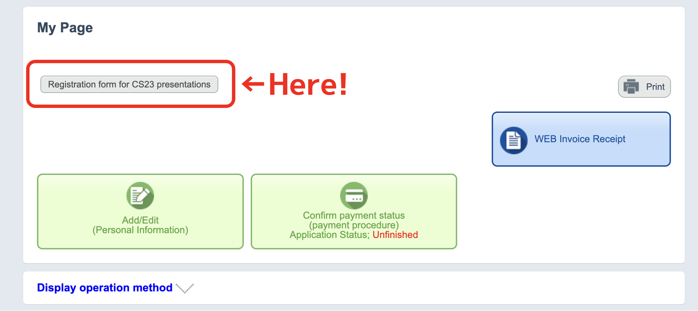

Cool Stars 23
15 – 19 June 2026, TOC Ariake, Tokyo Bay Area, Japan
The "Cambridge Workshops on Cool Stars, Stellar Systems and the Sun" are held biennially and have evolved to be the premier conference series for cool star research.
Registration is now open. Registration fees are listed below. You can register via the conference registration portal.
Limited financial support is available to allow students and other early career astronomers to attend CS23, if their institution cannot provide sufficient funds. Instructions to apply for travel grants can be found at the Registration site. The deadline to submit the financial support application is January 31, 2026.
A. To access the abstract submission form, please create an account on the registration portal. After logging in, go to your personal page and click the “Registration form for CS23 presentations” button shown in the image below.
If you plan to give a presentation on a single topic, and if you selected "Yes" for the question "If your request for an oral talk is rejected, would you prefer to have a poster instead?" at the submission page, you do not have to submit your abstract twice.
We plan to announce the finalized oral talks by the end of March.
Yes, you may submit an abstract separately to a splinter session. However, to maintain the one-oral-talk-per-person policy, both submissions will not be selected as oral talks.
No, you need to submit an abstract separately via the website of each splinter session where you would like to give a presentation.
No, but please complete the payment by the early-bird deadline (April 9). We plan to announce the first round of the financial support recipients in March. We will refund the registration fee and part of the accommodation fee if you secure travel support. The announcement of the second+ round may be later than that, depending on the condition of external grants the LOC team is applying for. If you need to cancel the registration, 100%(50%) of the registration fee will be refunded before April 10 (May 8).